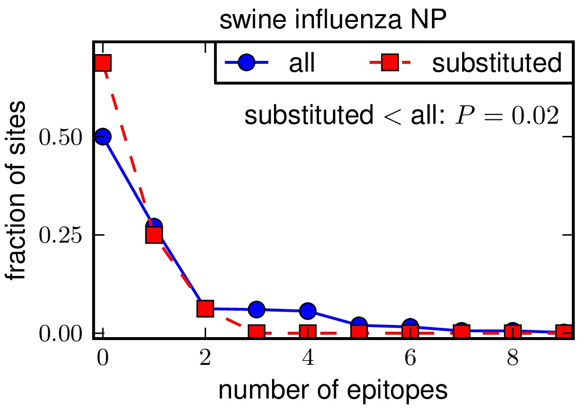
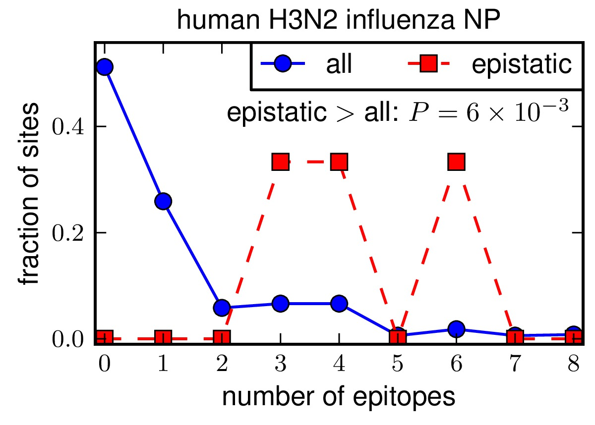

CTL epitopes in influenza NP: human H3N2 and swine¶
This is the analysis described in Gong and Bloom, PLoS Genetics, 2014.
This is an analysis of human CTL epitopes in the nucleoprotein (NP) of human H3N2 (1968 to 2013) and the swine NPs descended from the 1918 virus. It finds MHC class I epitopes with experimentally verified CTL responses as mined from the Immune Epitope Database. The analysis examines the association between epitopes and sites that have substituted during the natural evolution, and sites that have been experimentally identified as being involved in epistatic interactions.
This analysis utilizes the epitopefinder package. The data and scripts can be found in the subdirectory ./examples/NP_CTL_epitopes_H3N2_and_swine in the epitopefinder package.
This analysis was performed by Jesse Bloom.
Software used¶
This analysis was performed on Mac OS X (10.6.8) using the following software packages:
- epitopefinder (version 0.1) is the primary software package used.
- Python (version 2.6.8) is used to run epitopefinder.
- matplotlib (version 1.2.1) is used by epitopefinder to make plots.
- scipy (version 0.12.0) is used to compute statistics.
- MUSCLE (version 3.8) is used to perform alignments.
- The ImageMagick convert (version 6.8.5-5) command-line tool is used to create JPG versions of the plots created by epitopefinder
- The pdf2ps command-line tool (from Ghostscript 9.06) is used to create PS versions of the plots created by epitopefinder.
- The ps2eps (version 1.64) command-line tool is used to create EPS files of the plots from the PS files.
Input data files¶
The following input files were used for this analysis:
- IEDB_Influenza_Tcell_compact_2013-12-27.csv is a CSV file containing the compact format of the downloaded epitopes for all assays in the Immune Epitope Database with positive T-cell responses with the source organism being “Influenza A virus” and the host being “Homo sapiens” as downloaded on December-27-2013.
- supertype_classification.txt is a text file that classifies the HLA-A and HLA-B alleles according to supertypes. This supertype classification scheme was taken from BMC Immunology, 2008, 9(1) by downloading Additional file 1 from this reference, and then cutting out the supertype classification columns and adding a : character between the group and protein in the allele names.
- targetprots_humanH3N2.fasta contains the aligned sequences of the NP proteins from the human H3N2 strains A/Aichi/2/1968 and A/Texas/JMM_49/2012.
- targetprots_swine.fasta contains the aligned sequences of the NP proteins from the swine 1918-descendend strains A/swine/Wisconsin/1/1957 and A/swine/Indiana/A00968365/2012.
- selectedsites_humanH3N2.txt lists the sites in human H3N2 that substituted along the line of descent from A/Aichi/2/1968 to A/Texas/JMM_49/2012 (see http://jbloom.github.io/mutpath/example_influenza_NP_1918_Descended.html#human-h3n2-mutational-trajectory).
- selectedsites_swine.txt lists the sites in swine influenza that substituted along the line of descent from A/swine/Wisconsin/1/1957 to A/swine/Indiana/A00968365/2012 (see http://jbloom.github.io/mutpath/example_influenza_NP_1918_Descended.html#swine-influenza-mutational-trajectory).
- epistaticsites_humanH3N2.txt lists the sites in human H3N2 that have been experimentally identified as being involved in epistatic interactions in Gong et al, 2013. Specifically, these are sites where introducing an individual substitution that actually occurred along the natural evolutionary trajectory is deleterious in the background of the A/Aichi/2/1968 NP.
Running the analysis¶
The entire analysis can be run with the master run_analysis.py script. Simply run:
python run_analysis.py
This master script creates output *.csv files listing the epitope counts, and also creates plots summarizing the key results. All of the plots are created in *.pdf, *.jpg, and *.eps formats.
Note that the path to the MUSCLE executable is hardcoded in the run_analysis.py script. So if you want to run the script on your computer, you will need to manually edit run_analysis.py to specify the appropriate path to MUSCLE.
Steps in the analysis¶
The analysis performed by the run_analysis.py script proceeds through the following steps. These steps are automated by the script, but are documented here individually to explain the overall analysis process.
Identify MHC class I epitopes¶
The first step is to identify all MHC class I epitopes for the human H3N2 and swine sequence sets.
This is done by searching for all epitopes between length 8 and 12 residues from non-redundant MHC class I alleles that align with no more than one mismatch to one of the sequences specified in targetprots_humanH3N2.fasta (for human H3N2) or targetprots_swine.fasta (for swine).
The alleles are classified at the level of the allele group (as defined by HLA nomenclature), so for example HLA-B*35:01 has a gene of HLA-B and group of 35, and would be non-redundant with HLA-B*27:01 but redundant with HLA-B*35:03.
The identification of epitopes was done using the epitopefinder package with the following commands:
epitopefinder_getepitopes.py epitopefinder_getepitopes_human_H3N2_infile.txt
epitopefinder_getepitopes.py epitopefinder_getepitopes_swine_infile.txt
where the input files are created automatically by the run_analysis.py script.
The identified epitopes are found in the following created files:
For human H3N2:
- epitopesbysite_human_H3N2.csv
- epitopeslist_human_H3N2.csv
For swine:
- epitopesbysite_swine.csv
- epitopeslist_swine.csv
Plots are then created showing the number of epitopes per site for the swine and human H3N2 NPs. The plots are created using epitopefinder with the commands:
epitopefinder_plotdistributioncomparison.py epitopefinder_plotdistributioncomparison_human_H3N2_vs_swine_infile.txt
epitopefinder_plotlineardensity epitopefinder_plotlineardensity_infile.txt
where the input files are created automatically by the run_analysis.py script.
These plots show that the number and distribution of epitopes among the sites are highly similar for human H3N2 and swine NPs.
{kind=link}
{kind=link}
The run_analysis.py script also performs a Kolmogorov-Smirnov test of the null hypothesis that the distributions of epitopes for the human H3N2 and swine NPs are drawn from the same underlying distribution. This null hypothesis is consistent with the data (P = 1.00), suggesting that the epitopes are equivalently distributed for the two NPs.
Analyze epitopes among sites that substitute¶
The next step is to extract information about the number of epitopes per site for the sites of all substitutions along the evolutionary trajectory of interest. Recall that the evolutionary trajectories for the human H3N2 and swine NPs are found at http://jbloom.github.io/mutpath/example_influenza_NP_1918_Descended.html#human-h3n2-mutational-trajectory and http://jbloom.github.io/mutpath/example_influenza_NP_1918_Descended.html#swine-influenza-mutational-trajectory.
The identification of the epitopes among the sites that substitute is done using the epitopefinder package with the following commands:
epitopefinder_selectsites.py selectsites_infile_human_H3N2.txt
epitopefinder_selectsites.py selectsites_infile_swine.txt
where the input files are created automatically by the run_analysis.py script.
The number of epitopes per site for the selected sites are listed in the following created files:
- epitopecounts_selectedsites_human_H3N2.csv
- epitopecounts_selectedsites_swine.csv
Plots are then created comparing the number of epitopes per site among all sites versus the subset of sites that substituted along the evolutionar trajectories. The plots are created using epitopefinder with the commands:
epitopefinder_plotdistributioncomparison.py epitopefinder_plotdistributioncomparison_human_H3N2_all_vs_substituted_infile.txt
epitopefinder_plotdistributioncomparison.py epitopefinder_plotdistributioncomparison_swine_all_vs_substituted_infile.txt
where the input files are created automatically by the run_analysis.py script.
The P-values shown on the plots are one-sided P-values giving the probability that by random chance, the subset would have a difference from all sites as great as that observed. These plots indicate that the sites that substitute in swine NP have significantly fewer epitopes than the average site, while for human H3N2 the sites that substitute are bordering on significantly having more epitopes than all sites. One possible interpretation: on average human CTLs target sites that are relatively intolerant to mutation, so in the absence of selection (swine NP) the typical substituted site is depleted in epitopes. But in human H3N2 NP, pressure for CTL escape causes sites that substitute to have an excess of epitopes.

Above is the distributioncomparison_human_H3N2_all_vs_substituted.* plot.
Above is the distributioncomparison_swine_all_vs_substituted.* plot.
{kind=link}
The run_analysis.py script test the null hypothesis that the average number of epitopes for the substituted sites for human H3N2 do not exceed those for the substituted sites in swine NP more than is by expected by chance. This is done by drawing paiared random samples of the same sizes as the actual sets of substituted sites from the set of all site epitope counts for each NP homolog, and then testing how many paired random subsets have a difference in the human H3N2 and swine subset means that is greater than the actual difference observed. The resulting P-value is 0.008, indicating that the substituted sites for human NP contain significantly more epitopes than for swine NP.
Analyze epitopes among “epistatic” sites¶
The next step is to examine epitopes among the “epistatic” sites. These are the three sites of substitutions in human H3N2 (residues 259, 280, and 384) that were identified in Gong et al, 2013 as being individually deleterious in the background of the A/Aichi/2/1968 human H3N2 NP. Note that there are no such “epistatic” sites along the swine trajectory of interest, so no analysis can be performed of epistatic sites in swine NP.
The identification of the epitopes among the epistatic sites is done using the epitopefinder package with the following commands:
epitopefinder_selectsites.py epitopefinder_selectsites_human_H3N2_epistaticsites.txt
epitopefinder_selectsites.py selectsites_infile_swine.txt
where the input file is created automatically by the run_analysis.py script.
The number of epitopes per site for the epistatics sites is listed in the following created file:
- epitopecounts_epistaticsites_human_H3N2.csv
Plots are then created comparing the number of epitopes per site among the epistatic sites with the numbers among all sites and substituted sites. The plots are created using epitopefinder with the commands:
epitopefinder_plotdistributioncomparison.py epitopefinder_plotdistributioncomparison_human_H3N2_all_vs_epistatic_infile.txt
epitopefinder_plotdistributioncomparison.py epitopefinder_plotdistributioncomparison_human_H3N2_substituted_vs_epistatic_infile.txt
where the input files are created automatically by the run_analysis.py script.
The P-values shown on the plots are one-sided P-values giving the probability that by random chance, the epistatic subset would have a difference from all sites or the substituted as great as that observed. These plots indicate that the epistatic sites are significantly enriched in epitopes relative to all sites and substituted sites in human H3N2.
Above is the distributioncomparison_human_H3N2_all_vs_epistatic.* plot.

Above is the distributioncomparison_human_H3N2_substituted_vs_epistatic.* plot.
{kind=link}